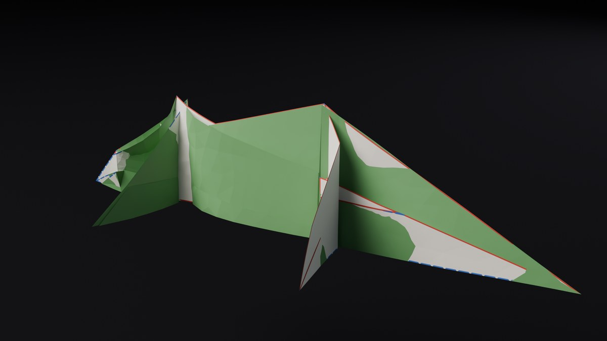
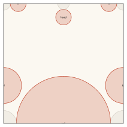
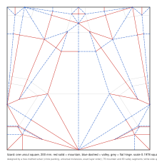
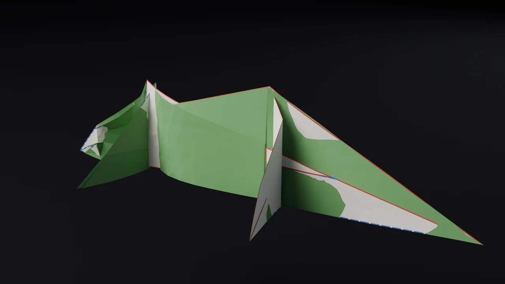
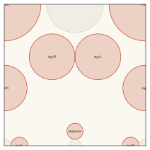
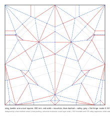
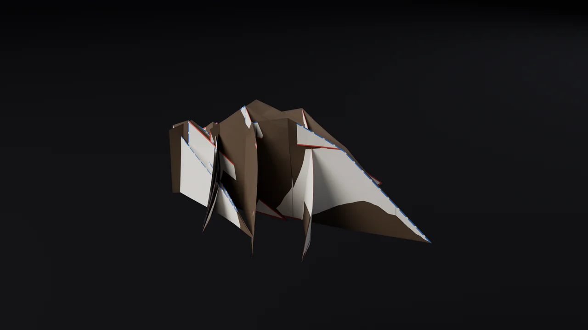
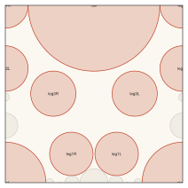
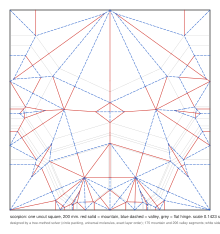
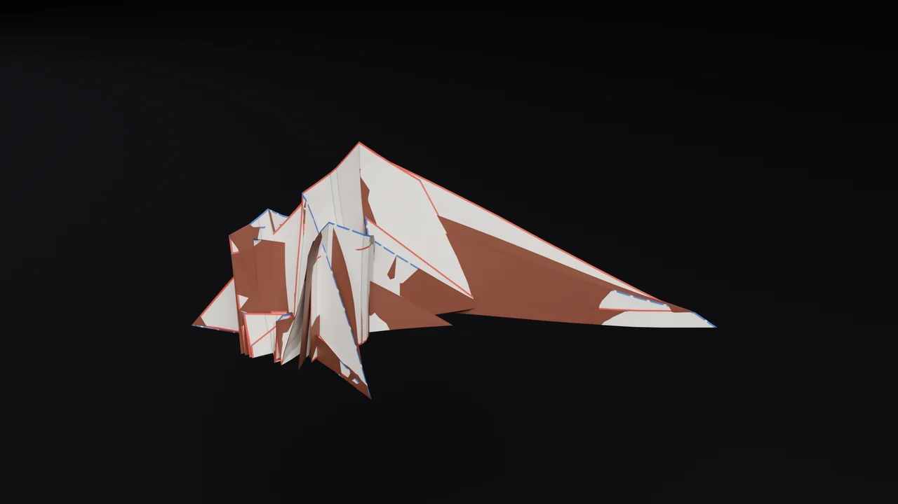

ONE UNCUT SQUARE
Three animals, each folded from one square of paper with no cuts. Nobody drew the folds. I described each animal as a stick figure with lengths (a lizard has a head, four legs and a tail twice the body long), and a solver turned that tree into a crease pattern the way Robert Lang's tree method says to: pack a circle for every limb, join the circles with molecules, then prove the whole thing folds flat with a real layer order. The film is a simulated sheet folding itself along those creases. The patterns are below the film, printable, if you want to fold one for real. I have not, and the caveats say what that means.

The film: each square starts flat with its pattern printed on, folds to its flat base, then the flaps swing out into a pose and the model stands up. Watch on YouTube.
The three patterns
Left: the circle packing the solver found. Every circle is one limb, its radius that limb's length in the tree, and the tree is scaled up until the circles only just fit the square (grey circles are stubs the solver adds to close the gaps). Middle: the crease pattern with mountain and valley assigned, red solid mountain, blue dashed valley, thin grey the hinges where the flaps swing. Right: the simulated sheet at the end of the film.
Lizard



Stag beetle



Scorpion



Print at 100 percent on A4 or letter; the square is 200 mm. The stag beetle pattern is drawn mirrored relative to the other two so that its coloured side ends up outside; fold each with the printed side facing you and the mountains rising toward you. Precrease everything, collapse the base, then shape the flaps by hand, as with any tree-method design.
How a stick figure becomes a crease pattern
The tree method is Lang's, from Origami Design Secrets. The animal is a tree: nodes for body and hips, and a leaf edge for every limb with a length. Each leaf becomes a circle on the square whose radius is the limb's length, and two circles may not overlap, because the paper between two flap tips has to be at least as long as the path between them in the tree. The solver packs the circles (many random starts, then a constrained optimiser pushing the scale up), so the square holds the biggest animal of those proportions it can. The scale in the captions is how much of the square one tree unit takes.
Circles that touch define polygons across the square, and each polygon is filled with a universal molecule: its edges are shrunk inward at equal speed until they meet, or until two corners come within tree distance of each other and the polygon splits, and the ridges this leaves are the creases. Where a polygon has a gap no circle fills, the solver adds a stub, a small extra leaf, so every region closes. The creases come out of the shrinking, not from anyone drawing them.
What the method does not give you is proof that the sheet can be folded flat. A pattern can satisfy every local rule and still ask the paper to pass through itself. So the solver builds the folded state exactly: every facet of the pattern is mapped to where it lies in the flat base (an axial coordinate along the tree, an elevation across it), and the map is checked to be an isometry on every facet to fourteen decimal places. The layer order then goes to Z3, an SMT solver: a boolean for each pair of overlapping facets saying which is above; for every crease, no third facet may lie between the two it joins; and no facet may pass through another's fold, the taco and tortilla rules. If Z3 says satisfiable the order exists, and mountain and valley follow from it. All three patterns got an order; the scorpion took eleven minutes. Every interior vertex then passes Maekawa's rule.
The film is not the proof. It is a mass-spring sheet on the GPU, two to four thousand vertices, springs along the edges and torsion springs at every crease pulling toward the assigned angle, plus a gentle pull of each facet toward its proven place in the base. Nothing stops the sheet passing through itself, so what you see is the sheet finding the base, not a sequence a person could follow. The pose at the end is the base's flaps rotated rigidly about their hinges, roughly what a folder does when shaping.
Caveats, plainly
I have not folded any of these from paper. The patterns are sound in the sense above (an exact folded state, a layer order a solver accepts, Maekawa at every vertex), which is more than a hand-drawn pattern usually has, but flat-foldable with a valid order is a weaker claim than foldable by a person. Tree-method bases can demand collapsing many creases at once and some of these regions are dense. The order is a valid one, not the nicest; a folder would rearrange layers to taste. The molecules here shrink to a single ridge and do not add the sinks and reverse folds that give a tree-method animal its final shape, so what folds is the base, and the head, legs and tail are flaps to be shaped, which the film fakes by rotating them. The simulated sheet is guided: its springs alone stall in a crumple with the creases up to half a radian off, and the pull toward the proven folded state is what closes it. There is no self-collision, so mid-fold frames show paper passing through paper. Three animals were attempted and three are shown; nothing was left out.
Sources
Robert J. Lang, Origami Design Secrets, second edition (2011), the chapters on circle packing, molecules and tree theory; his TreeMaker is the reference implementation of the method and this is not it. Layer ordering uses the taco and tortilla constraints from the flat-foldability literature (Demaine, Tachi and others); Z3 is from Microsoft Research. The fold simulation follows Ghassaei, Demaine and Gershenfeld's Origami Simulator (2018). Rendered in Blender 5.2, Cycles.